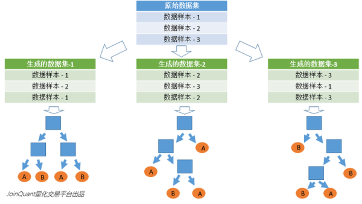

记录随机森林算法的基本概念（熵，分类器，候选特征，分裂特征），构建过程，优缺点
随机森林学习笔记
相关概念
熵
熵是对无序程度的衡量，熵越大越无序，熵越小越有序
首先，熵是一种不可逆性（热力学熵）。一件事（或一个过程），越不可逆，其熵越大。
热力学第二定理：温度可以自发从高向低传递，但不能反过来。虽然能量是守恒的，但你能使用的能量却在逐渐减少。这种不可逆性，即“覆水难收，人死不可复生。通常人们不喜欢不可逆。大部分人不能保证自己一次就能成功，所以希望有重新开始的机会
其次，熵反映了你对一件事的了解程度（信息熵）。你对一件事了解越少，其熵越大。
两个陌生人之间，就存在一个无比巨大的熵。在一起，双方自然会感觉不舒服。两人逐渐熟悉、逐渐了解的过程，本质是一个熵减的过程。当双方为知己时，相互的信息熵已趋近于0。两者相处起来，会轻松。沟通无障碍，不用去费劲解释。
最后，熵反映了你对一件东西的不确定性（构象熵）。当你越不确定，这件东西对你来说，熵就越大。
分类器
分类器就是给定一个样本的数据，判定这个样本属于哪个类别的算法。例如在股票涨跌预测中，我们认为前一天的交易量和收盘价对于第二天的涨跌是有影响的，那么分类器就是通过样本的交易量和收盘价预测第二天的涨跌情况的算法。
分裂
在决策树的训练过程中，需要一次次的将训练数据集分裂成两个子数据集，这个过程就叫做分裂。
特征
在分类问题中，输入到分类器中的数据叫做特征。以上面的股票涨跌预测问题为例，特征就是前一天的交易量和收盘价。
待选特征
在决策树的构建过程中，需要按照一定的次序从全部的特征中选取特征。待选特征就是在目前的步骤之前还没有被选择的特征的集合。例如，全部的特征是 ABCDE，第一步的时候，待选特征就是ABCDE，第一步选择了C，那么第二步的时候，待选特征就是ABDE。
分裂特征
接待选特征的定义，每一次选取的特征就是分裂特征，例如，在上面的例子中，第一步的分裂特征就是C。因为选出的这些特征将数据集分成了一个个不相交的部分，所以叫它们分裂特征。
如何选择分裂特征？
用不同的准则衡量特征的贡献程度。主流准则的列举3个：
- ID3算法（J. Ross Quinlan于1986年提出），采用信息增益最大的特征；
- C4.5算法（J. Ross Quinlan于1993年提出）采用信息增益比选择特征；
- CART算法（Breiman等人于1984年提出）利用基尼指数最小化准则进行特征选择。
随机森林的构建过程
决策树相当于一个大师，通过自己在数据集中学到的知识对于新的数据进行分类。但是俗话说得好，一个诸葛亮，玩不过三个臭皮匠。随机森林就是希望构建多个臭皮匠，希望最终的分类效果能够超过单个大师的一种算法。
那随机森林具体如何构建呢？有两个方面：数据的随机性选取，以及待选特征的随机选取。
数据的随机选取：
首先，从原始的数据集中采取有放回的抽样，构造子数据集，子数据集的数据量是和原始数据集相同的。不同子数据集的元素可以重复，同一个子数据集中的元素也可以重复。
第二，利用子数据集来构建子决策树，将这个数据放到每个子决策树中，每个子决策树输出一个结果。最后，如果有了新的数据需要通过随机森林得到分类结果，就可以通过对子决策树的判断结果的投票，得到随机森林的输出结果了。
如下图，假设随机森林中有3棵子决策树，2棵子树的分类结果是A类，1棵子树的分类结果是B类，那么随机森林的分类结果就是A类。

待选特征的随机选取：
与数据集的随机选取类似，随机森林中的子树的每一个分裂过程并未用到所有的待选特征，而是从所有的待选特征中随机选取一定的特征，之后再在随机选取的特征中选取最优的特征。这样能够使得随机森林中的决策树都能够彼此不同，提升系统的多样性，从而提升分类性能。
下图中，蓝色的方块代表所有可以被选择的特征，也就是目前的待选特征。黄色的方块是分裂特征。
左边是一棵决策树的特征选取过程，通过在待选特征中选取最优的分裂特征（别忘了前文提到的ID3算法，C4.5算法，CART算法等等），完成分裂。
右边是一个随机森林中的子树的特征选取过程。
随机森林的优点与缺点
优点：
- 随机森林算法能解决分类与回归两种类型的问题，并在这两个方面都有相当好的估计表现；
- 随机森林对于高维数据集的处理能力令人兴奋，它可以处理成千上万的输入变量，并确定最重要的变量，因此被认为是一个不错的降维方法。此外，该模型能够输出变量的重要性程度，这是一个非常便利的功能。
- 在对缺失数据进行估计时，随机森林是一个十分有效的方法。就算存在大量的数据缺失，随机森林也能较好地保持精确性。
- 当存在分类不平衡的情况时，随机森林能够提供平衡数据集误差的有效方法；（为什么？）
- 模型的上述性能可以被扩展运用到未标记的数据集中，用于引导无监督聚类、数据透视和异常检测；
- 随机森林算法中包含了对输入数据的重复自抽样过程，即所谓的bootstrap抽样。这样一来，数据集中大约三分之一将没有用于模型的训练而是用于测试，这样的数据被称为out of bag samples，通过这些样本估计的误差被称为out of bag error。
研究表明，这种out of bag方法的与测试集规模同训练集一致的估计方法有着相同的精确程度，因此在随机森林中我们无需再对测试集进行另外的设置。 - 训练速度快，容易做成并行化方法
缺点：
1.随机森林在解决回归问题时并没有像它在分类中表现的那么好，这是因为它并不能给出一个连续型的输出。当进行回归时，随机森林不能够作出超越训练集数据范围的预测，这可能导致在对某些还有特定噪声的数据进行建模时出现过度拟合。
2.对于许多统计建模者来说，随机森林给人的感觉像是一个黑盒子——你几乎无法控制模型内部的运行，只能在不同的参数和随机种子之间进行尝试。
机器学习中如何处理缺失数据？
目前有三类处理方法：
- 用平均值、中值、分位数、众数、随机值等替代。效果一般，因为等于人为增加了噪声。
- 用其他变量做预测模型来算出缺失变量。效果比方法1略好。有一个根本缺陷，如果其他变量和缺失变量无关，则预测的结果无意义。如果预测结果相当准确，则又说明这个变量是没必要加入建模的。一般情况下，介于两者之间。
- 最精确的做法，把变量映射到高维空间。比如性别，有男、女、缺失三种情况，则映射成3个变量：是否男、是否女、是否缺失。连续型变量也可以这样处理。比如Google、百度的CTR预估模型，预处理时会把所有变量都这样处理，达到几亿维。这样做的好处是完整保留了原始数据的全部信息、不用考虑缺失值、不用考虑线性不可分之类的问题。缺点是计算量大大提升。而且只有在样本量非常大的时候效果才好，否则会因为过于稀疏，效果很差。
问题
随机森林是一个十分有效的方法。就算存在大量的数据缺失，随机森林也能较好地保持精确性；
RF不需要做特征选择，不需要规范化数据，如何数据缺失，不用向量化进行矩阵运算吗？随机森林在解决回归问题时并没有像它在分类中表现的那么好，这是因为它并不能给出一个连续型的输出。当进行回归时，随机森林不能够作出超越训练集数据范围的预测，这可能导致在对某些还有特定噪声的数据进行建模时出现过度拟合。如何避免过拟合？
样本选择是随机的，分裂特征选择也是随机的，
random forest 确实是一个不易overfitting的模型。
主要依靠了其中三个随机过程，即产生决策树的样本是随机生成，构建决策树的特征值是随机选取，树产生过程中裂变的时候是选择N个最佳方向中的随机一个裂变的。
当前的数据量过少，不足以对整个数据集进行分布估计，因此往往需要防止模型过拟合，提高模型泛化能力。
在对模型进行训练时，有可能遇到训练数据不够，即训练数据无法对整个数据的分布进行估计的时候，或者在对模型进行过度训练（overtraining）时，常常会导致模型的过拟合（overfitting）。如下图所示：
通过上图可以看出，随着模型训练的进行，模型的复杂度会增加，此时模型在训练数据集上的训练误差会逐渐减小，但是在模型的复杂度达到一定程度时，模型在验证集上的误差反而随着模型的复杂度增加而增大。此时便发生了过拟合，即模型的复杂度升高，但是该模型在除训练集之外的数据集上却不work。
为了防止过拟合，我们需要用到一些方法，如：early stopping、数据集扩增（Data augmentation）、正则化（Regularization）、Dropout等。
- 树的颗树，树的深度如何确定？
特征个数？
当随机森林产生的树的数目趋近无穷的时候，理论上根据大数定理可以证明训练误差与测试误差是收敛到一起的。
- RF训练集和测试集的比例确定？